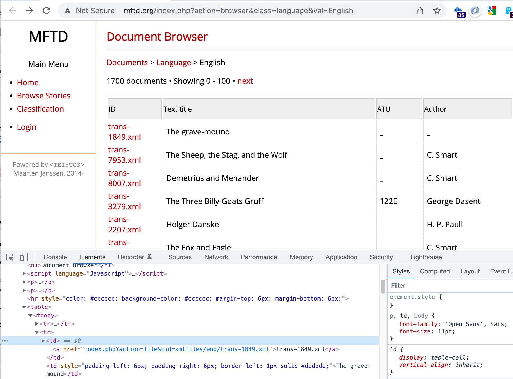
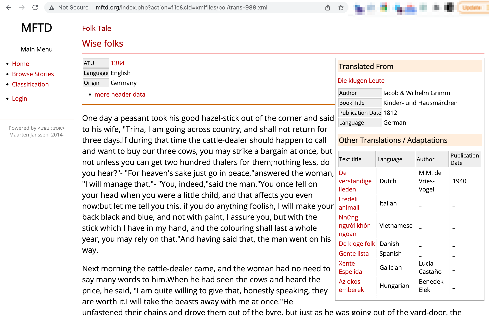

Multilingual Folk Tale Database (MFTD)¶
The Multilingual Folk Tale Database (MFTD) [http://www.mftd.org/] publishes a wide ranging collection of folk tales across many languages.
In this notebook, we will create a simple scraper for grabbing English language folktales from the database into a simple file-based SQLite database.
Let’s start off by loading in a couple of packages to support the cacheing of the web pages we’ll be downloading to populate the database.
Note
“Cacheing” the pages means storing a local copy of them. This means we only need to grab the page from the webserver once and then work with a local copy of it if we need to call it again, as for example when developing the scripts used to populate the database.)
import requests_cache
from datetime import timedelta
# Set the cache to live for many days...
requests_cache.install_cache('web_cache', backend='sqlite',
expire_after=timedelta(days=1000))
MFTD English Stories¶
We can find a listing of English stories contained in the Multilingual Folk Tale Database from http://www.mftd.org/index.php?action=browser&class=language&val=English. This is a paged representation, so to scrape the whole database we will have to navigate across multiple results pagess via a next page link.
english_story_index_url = "http://www.mftd.org/index.php?action=browser&class=language&val=English"
from requests_html import HTMLSession
session = HTMLSession()
index_response = session.get(english_story_index_url)
The index page provides a summary of key information and then links to a story page. The story page includes the story title and original title, (for example, if is a translated work), as well as the story text. All this information is rendered from an XML file, the filepath and name of which is available from the index page. (The HTML page for each story is keyed by the XML file path.)
What this means is that we don’t need to scrape the story page if we can figure out how to parse the XML documents. Alternatively, we can scrape the actual story page. Or we might attempt a fusion of the two, extracting some data from the HTML page, and some from the XML document, although this comes at the cost of downloading both the XML and HTML files from MFTD, rather than just one of them.
Let’s start by grabbing the list of XML links from a single index page.
The links are all contained in the rows of a single table:

If we grab the table, we can then pull the links from it:
# Scrape links from table
link_elements = index_response.html.find('table')[0].find("a")
# Get href link from the link_elements
links = [link_element.attrs["href"] for link_element in link_elements]
links[:3]
['index.php?action=file&cid=xmlfiles/eng/trans-1849.xml',
'index.php?action=file&cid=xmlfiles/eng/trans-7953.xml',
'index.php?action=file&cid=xmlfiles/eng/trans-8007.xml']
We can then tidy this up to get the XML file path. By observation, if we split each link on the = character, the filepath is then given as the last part (list index value -1):
links = [link.split("=")[-1] for link in links]
links[:3]
['xmlfiles/eng/trans-1849.xml',
'xmlfiles/eng/trans-7953.xml',
'xmlfiles/eng/trans-8007.xml']
Defining a simple function to extract the links from the page lets us grab the links using a single line of code:
def get_xml_paths(response):
"""Get XML links from index page."""
# Scrape links from table
link_elements = response.html.find('table')[0].find("a")
# Get href link from the link_elements
links = [link_element.attrs["href"] for link_element in link_elements]
# Tidy links
links = [link.split("=")[-1] for link in links]
return links
get_xml_paths(index_response)[:3]
['xmlfiles/eng/trans-1849.xml',
'xmlfiles/eng/trans-7953.xml',
'xmlfiles/eng/trans-8007.xml']
Next, we need to find a way of iterating over all the index pages.
At the top of the page is a next link. If we search for the anchor containing the text next, we can inspect that link:
next_link = index_response.html.find("a", containing = "next")
next_link
[<Element 'a' onclick="document.getElementById('rsstart').value ='100'; document.resubmit.submit();">]
Clicking the link doesn’t actually work for me, but by a bit of guess work, we find that if we add the parameter &start= to the URL we can retrieve the next 100 records starting from the supplied start value.
from parse import parse
next_val = parse("document.getElementById('rsstart').value ='{next}'; document.resubmit.submit();",
next_link[0].attrs['onclick'])
next_val, int(next_val['next'])
(<Result () {'next': '100'}>, 100)
We can keep doing this, adding 100 to the start value each time, until no next link appears on the page.
To simplify the creation of the URL, we can create a template for it, into which we can pass the start value:
url_template = "http://www.mftd.org/index.php?action=browser&class=language&val=English&start={start}"
# Get the XML links from the first index page
response = session.get(english_story_index_url)
xml_paths_full = get_xml_paths(response)
next_link = response.html.find("a", containing = "next")
while next_link:
# Find the next page index
next_val = parse("document.getElementById('rsstart').value ='{next}'; document.resubmit.submit();",
next_link[0].attrs['onclick'])
start = next_val['next']
# Generate the next page URL
next_url = url_template.format(start=start)
#Get the next page
response = session.get(next_url)
# Get the XML links
xml_paths = get_xml_paths(response)
# Add scraped links to full links list
xml_paths_full.extend(xml_paths)
# Is there another page?
next_link = response.html.find("a", containing = "next")
len(xml_paths_full)
1717
Parsing HTML Pages¶
The HTML page for each story is keyed by the XML path. We can use a templated string to generate the HTML page URL:
html_url_template = "http://www.mftd.org/index.php?action=file&cid={html_path}"
html_url = html_url_template.format(html_path=xml_paths_full[685])
html_url
'http://www.mftd.org/index.php?action=file&cid=xmlfiles/eng/trans-5362.xml'
And grab the page:
html_response = session.get(html_url)
Each story page has a some metadata at the top of the page, the story text, and some additional metadata in a sidebar.

The text is contained within a single HTML element, which is convenient. But the metadata at the top of the page and in the sidebar is very variable across story pages.
To start with, let’s parse the HTML using BeautifulSoup so that we can more easily work with it:
# For some reason, requests-html can't reliably find the element
# So parse the HTML using BeautifulSoup
from bs4 import BeautifulSoup
soup = BeautifulSoup(html_response.text, 'lxml')
We can easily extract the title from the page header :
soup.find('h1').text
'The Piglet, the Sheep, and the Goat'
In the HTML, the text can be found inside a <text> element.
text = str(soup.find('text'))
text
'<text><p> A YOUNG PIG was shut up in a fold-yard with a Goat and a Sheep. On one occasion when the shepherd laid hold of him, he grunted and squeaked and resisted violently. The Sheep and the Goat complained of his distressing cries, saying, &quot;He often handles us, and we do not cry out.&quot; To this the Pig replied, &quot;Your handling and mine are very different things. He catches you only for your wool, or your milk, but he lays hold on me for my very life.&quot;</p></text>'
Some of the texts have sentence tags (<s>); the <s> tag in HTML is a strikethrough, so let’s just process that text to replace the <s> tags with <span> tags.
We can also replace the <title> with a heading tag (<h1>).
text = text.replace("<s ", "<span ").replace("</s>", "</span> ") # Add a space char
text = text.replace("<title>", "<h1> ").replace("</title>", "</h1>")
We can now can now use the markdownify package to convert the story HTML to markdown:
import markdownify
from IPython.display import Markdown
m = markdownify.markdownify(text, bullets="-")#.strip()
Markdown(m)
A YOUNG PIG was shut up in a fold-yard with a Goat and a Sheep. On one occasion when the shepherd laid hold of him, he grunted and squeaked and resisted violently. The Sheep and the Goat complained of his distressing cries, saying, "He often handles us, and we do not cry out." To this the Pig replied, "Your handling and mine are very different things. He catches you only for your wool, or your milk, but he lays hold on me for my very life."
Creating a Story Database¶
Although we will be losing a lot of metadata information by only saving the story title and text, the available metadata fields are too inconsistent for us to reliably extract information with just a cursory review of a couple of stories. So for now, let’s just create a pure story database, along with the XML path, with support for full text search.
from sqlite_utils import Database
db_name = "mtdf_demo.db"
# While developing the script, recreate database each time...
db = Database(db_name, recreate=True)
db["english_stories"].create({
"title": str,
"text": str,
"path": str
})
# Create a full text search table to improve search support
# Include the path for convenience
db["english_stories"].enable_fts(["title", "text", "path"], create_triggers=True, tokenize="porter")
<Table english_stories (title, text, path)>
We can iterate through all the English story XML links and grab the stories into the database.
Adding one story at a time to the database is inefficient, but if we want to play nicely with the MFTD server, we should have a short delay between requests anyway.
With over 1700 records to grab the following will take some time to run (note that the requests are cached, so if we rerun the routine, we shouldn’t be hitting the server again)…
So set the following running, and go and get a cup of tea and some cake…
import time
# We'll use a progress bar
from tqdm.notebook import tqdm
# Empty the db tables
db["english_stories"].delete_where()
db["english_stories_fts"].delete_where()
records = []
sleep_time = 0
for i, xml_path in enumerate(tqdm(xml_paths_full)):
html_url = html_url_template.format(html_path=xml_path)
html_response = session.get(html_url)
soup = BeautifulSoup(html_response.text, 'lxml')
record = {"title": soup.find('h1').text,
"path": xml_path}
# Get the story text
text = str(soup.find('text'))
# Tidy it
text = text.replace("<s ", "<span ").replace("</s>", "</span> ") # Add a space char
text = text.replace("<title>", "<h1> ").replace("</title>", "</h1>")
# And convert to markdown
record["text"] = markdownify.markdownify(text, bullets="-")
# Add to the database - batches of 50
records.append(record)
if len(records)==50:
#print("Adding records...")
db["english_stories"].insert_all(records)
# Reset the session
records = []
session = HTMLSession()
#time.sleep(5) # Give a backoff...
# And play nice - ideally, we wouldn't do this with cached objects
# Even so, do we get backoff requests or rate limited?
time.sleep(sleep_time)
#Final update
db["english_stories"].insert_all(records)
<Table english_stories (title, text, path)>
Query the Database¶
We can query the database table using exact search terms or using full text search. Let’s start with an simple direct query:
from pandas import read_sql
q = "SELECT * FROM english_stories LIMIT 3"
read_sql(q, db.conn)
| title | text | path | |
|---|---|---|---|
| 0 | The grave-mound | The grave-mound\n================\n\nA rich f... | xmlfiles/eng/trans-1849.xml |
| 1 | The Sheep, the Stag, and the Wolf | When one rogue would another get\nFor surety i... | xmlfiles/eng/trans-7953.xml |
| 2 | Demetrius and Menander | If Esop's name at any time\nI bring into this ... | xmlfiles/eng/trans-8007.xml |
How many records are there?
q = "SELECT COUNT(*) AS num_records FROM english_stories"
read_sql(q, db.conn)
| num_records | |
|---|---|
| 0 | 1717 |
We can also run a full text search:
# FTS search
q = f"""
SELECT english_stories_fts.* FROM english_stories_fts
WHERE english_stories_fts MATCH {db.quote('sea "white horses" waves')};
"""
read_sql(q, db.conn)#.iloc[0]['text']
| title | text | path | |
|---|---|---|---|
| 0 | The Story Of Little King Loc | Two or three miles from the coast of France, a... | xmlfiles/lang/lang_olive-4.xml |
Parsing XML Story Files¶
Stories in the MFTD are represented as XML files. We could parse each XML file into a simple record that we can add to a story database, but of course things aren’t that simple. The text element of the XML document contains the text, but the structure is fluid. Some documents only contain paragraph tags, others contain chapter headings, yet others are broken down to the sentence level.
If we had access to the complete XML schema (that is, a fully specified abstract representation of the elements and attributes that might appear in one of the XML documents) we would have more of a chance of creating a parser for the XML document. Even better if we had access to a stylesheet we could crib from that transformed to the XML to HTML.
But we don’t. So whilst the following represents some notes relating to how we might go about building out own parser for the XML documents, a complete treatment will not be attempted for now.
xml_example_path = xml_paths_full[0]
xml_example_path
'xmlfiles/eng/trans-1849.xml'
The full URL is rooted on http://www.mftd.org/ which we can generate from a templated string:
xml_url_template = "http://www.mftd.org/{xml_path}"
xml_url = xml_url_template.format(xml_path=xml_example_path)
xml_url
'http://www.mftd.org/xmlfiles/eng/trans-1849.xml'
Start off by grabbing the XML file:
import requests
xml_response = requests.get(xml_url)
We can now parse the XML into an OrderedDict data structure using the xmltodict package. Since Python 3.6+, simple Python dictionaries have been order preserving, so we lose nothing by converting the OrderedDict to a simple dict by saving it out to a JSON datastructure then reading it back in as a dict:
import xmltodict
import json
xml_dict = json.loads(json.dumps(xmltodict.parse(xml_response.content, process_namespaces=True)["TEI"]))
#xml_dict
We can cast this structure to a flat, row-based form using the pandas json_normalize function, tidying up the column names a little as we do so:
from pandas import json_normalize
df_xml = json_normalize(xml_dict)
df_xml
| teiHeader.fileDesc.titleStmt.title | teiHeader.fileDesc.titleStmt.author | teiHeader.fileDesc.sourceDesc.bibl.@id | teiHeader.fileDesc.sourceDesc.bibl.@type | teiHeader.fileDesc.sourceDesc.bibl.title | teiHeader.fileDesc.sourceDesc.bibl.author | teiHeader.fileDesc.sourceDesc.bibl.booktitle | teiHeader.fileDesc.sourceDesc.bibl.date | teiHeader.fileDesc.notesStmt.note | teiHeader.fileDesc.notesStmt.notes.@n | teiHeader.profileDesc.langUsage.language.@ident | teiHeader.profileDesc.langUsage.language.#text | text.@language | text.title | text.chapter.@id | text.chapter.p | |
|---|---|---|---|---|---|---|---|---|---|---|---|---|---|---|---|---|
| 0 | The grave-mound | None | trans-1851.xml | orig | Der Grabhügel | Jacob & Wilhelm Grimm | None | 1812 | [{'@n': 'recid', '#text': '1849'}, {'@n': 'nam... | atu | eng | English | The grave-mound | 1 | [{'@id': 'p-1', 's': [{'@id': 's-1', '#text': ... |
# Drop the notes column
df_xml.drop(columns=["teiHeader.fileDesc.notesStmt.note"],
inplace=True) # What is extent of teiHeader.fileDesc.notesStmt.note ?
# Tidy up column names
df_xml.columns = ["_".join(c.split(".")[-2:]).replace("#", "").replace("@", "") for c in df_xml.columns]
df_xml
| titleStmt_title | titleStmt_author | bibl_id | bibl_type | bibl_title | bibl_author | bibl_booktitle | bibl_date | notes_n | language_ident | language_text | text_language | text_title | chapter_id | chapter_p | |
|---|---|---|---|---|---|---|---|---|---|---|---|---|---|---|---|
| 0 | The grave-mound | None | trans-1851.xml | orig | Der Grabhügel | Jacob & Wilhelm Grimm | None | 1812 | atu | eng | English | The grave-mound | 1 | [{'@id': 'p-1', 's': [{'@id': 's-1', '#text': ... |